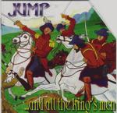

| Artist: | Jump |
| Title: | ...And All The King's Men |
| Label: | Cyclops CYCL 093 |
| Length(s): | 66 minutes |
| Year(s) of release: | 1994/2000 |
| Month of review: | [02/2001] |
| 1) | All The King's Horses | 4.42 |
| 2) | Seize The Day | 6.09 |
| 3) | George's Revolution | 4.18 |
| 4) | Camera City | 5.41 |
| 5) | Shed No Tears | 5.49 |
| 6) | Share The Shame | 4.20 |
| 7) | Two Up, Two Down | 5.01 |
| 8) | Judgement Day | 3.53 |
| 9) | Dangerous Devotions | 3.18 |
| 10) | Another False Dawn | 4.25 |
| 11) | Someone Else's Prayer (part 1) | 4.36 |
| 12) | Someone Else's Prayer (part 2) | 5.36 |
| 13) | Six'o'clock (bonus) | 4.40 |
| 14) | This Is The Wall (bonus) | 3.28 |
Seize The Day opens with acoustic guitar and bare vocals. I often get the impression of listening to Fish, not because of the voice, but because of the things said in the way they are formulated. It is hard to pin down, but that is how I feel. It certainly doesn't surprise me that the band supported him during gigs. Seize The Day likes its predecessor has a certain nagging aspect and some highly ethereal guitars and keyboards. The song has a sense of urgency. This longest track of the album gets more funky and easy-going toward the end with a prominent role for the bass. A bit too loose here and the alternating voices are also detrimental.
George's Revolution is a funky track with something bluesy in there as well with not so melodious vocals and rather heavy guitars. This is probably a bit too groovy and straightforward for proggers. We get a bit of New Wave with Camera City (part of the lyrics were omitted). Melodically this catchy track has a very nice and memorable chorus.
Shed No Tears is a more rolling track, more easy-going with slow guitars and piano and organ. Again part of the lyrics are missing (and not because of the cut-out). Share The Shame opens with acoustic guitar and has a bit of a live sound. A bit of an introspective song in parts, but also one with a loud chorus (with female backing vocals) and some rather dark guitar chords.
Two Up, Two Down has a number of faces: a melodious dreamy one, a rowdy blues rock one and a somewhat friendly folky one. Quite a nice track because of the good integration of these aspects. The rap in the middle is not really to my liking though. Judgement Day is a bit of loud screamy track mostly because of the vocals. I don't like it much. The same holds for the next one Dangerous Devotions which is a kind of boogie with confusing vocal harmonies. Maybe meant to be a bit funny, but it did not make me laugh.
Another False Dawn is a mid-tempo track with some pretty poppy keyboards at the end, but certainly better than the previous two tracks. There are even some breaks in this track, but they do take the flow out of the song a bit.
The two parted Someone Else's Prayer is up next. With a total of over ten minutes, the song opens a bit sadly and carefully sung lyrics. The second part is a rocking piece with much more lyrics, backing vocals by Hammond and quite a bit of keyboards/organ. Still energy seems a bit more important here than melody. The song has a rather strong live feel, seemingly as if a shorter tracks got stretched out.
Six'O'Clock reminds me of Cock Robin, no actually it reminds me even more of Paul Carrack's When You Walk In The Room. A mid-tempo vocal pop track which happens to be a bit too laid back.
The Wall is the predecessor of Judgement Day. Driving rhythm guitars open the track and I like it more than its successor. The female vocals are lacking here and the although the song is not that melodic, it has plenty of variation and a sinister undertone.